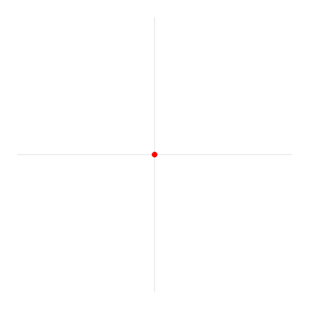
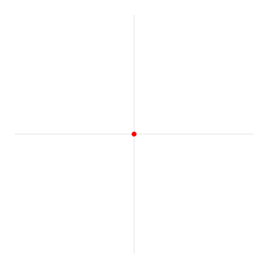

MAT100 for ELK og KOM
Uke 3
02.09.2015
Alexander Lundervold
institutt for data- og realfag
Sist uke
- Fullførte vektorregningen
- Skalar- og vektorprojeksjon
- Ortogonal dekomposisjon
- Vektorproduktet
- Funksjoner
- Hva er funksjoner? Hva brukes de til?
- Definisjonsmengde og verdimengde
Funksjoner
Funksjoner som maskiner:
Motivasjon for å studere funksjoner:
Denne uken
- Funksjoner
- Komposisjon/sammensetting av funksjoner
- Inverse funksjoner
- Trigonometriske funksjoner
- Eksponensialer og logaritmer
- Absoluttverdier, splittede funksjonsuttrykk og ulikheter
Funksjoner
De tre viktigste:
polynomer, eksponensialer, trigonometriske funksjoner
Inverse funksjoner

Trigonometriske funksjonen
Husk motivasjonen:
Kan bruke sinus og kosinus til å splitte opp signaler
Viktigste funksjonen i elektro:
$$s(t) = A\sin\big(\omega t + \varphi\big)$$Trigonometriske funksjoner
Hva er sinus og cosinus? Hva er radianer?
 

Trigonometriske identiteter
$$ \begin{align*} \sin 2t &= 2\sin t \cos t\\ \cos 2t &= \cos^2 t - \sin^2(t)\\ \sin^2 t &= \frac{1}{2}(1-\cos 2t)\\ \cos^2 t &= \frac{1}{2}(1+\cos 2t) \end{align*} $$
Hvorfor?
og $$\begin{align*}\frac{1}{2}(1-\cos 2t) &= \frac{1}{2}(1-(\cos^2t - \sin^2 t)) \\ &= \frac{1}{2}(\color{blue}{1-\cos^2 t} + \sin^2 t) \\ &= \frac{1}{2}(\color{blue}{\sin^2t} + \sin^2t) \\ &= \sin^2 t. \end{align*} $$
Graf til sinus:

Graf til tangens:

Eksponentialer og logaritmer
Eksponentiell vekst


{kind=link}
{kind=link}
{kind=link}
{kind=link}